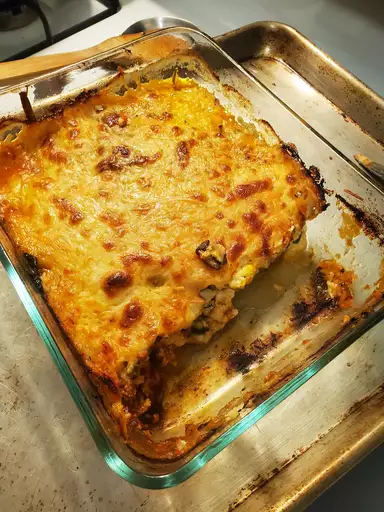

Lasagna

Lasagna is a type of pasta. It is often served in overlapping sheets interspersed with layers of ingredients of your choice, most often meat in bolognese and béchamel sauce. Its origin is Italian and the dish normally prepared with meat is called baked lasagna.
Ingredientes
- carrot
- oive oil
- crushed tomato
- minced meat
- celery and onion
- wine and oregano
- salt and pepper
Steps
- En una sartén grande, cocina la carne molida o los vegetales hasta que estén tiernos y bien cocidos.
Agrega la salsa de tomate a la sartén y sazona con sal, pimienta y especias al gusto. Cocina a fuego lento durante unos minutos para que los sabores se mezclen bien.
- Precalienta el horno a la temperatura indicada en las instrucciones del paquete de lasaña.En una bandeja para horno, coloca una capa delgada de salsa de tomate en el fondo.
Coloca una capa de láminas de lasaña encima de la salsa de tomate.
Agrega una capa de relleno sobre las láminas de lasaña. Extiéndelo uniformemente.
Espolvorea queso mozzarella rallado sobre el relleno.
Repite los pasos anteriores para crear capas adicionales de lasaña: salsa de tomate, láminas de lasaña, relleno y queso.
Finaliza con una capa de láminas de lasaña cubierta con salsa bechamel (opcional) y queso parmesano rallado.
- Cubre la bandeja con papel de aluminio y colócala en el horno precalentado.
Hornea durante el tiempo indicado en las instrucciones del paquete de lasaña o hasta que las láminas estén tiernas y el queso esté dorado y burbujeante.
Retira el papel de aluminio durante los últimos minutos de cocción para que la parte superior se dore.
- Deja reposar la lasaña durante unos minutos antes de cortarla y servirla.
Sirve porciones individuales acompañadas de ensalada o pan.